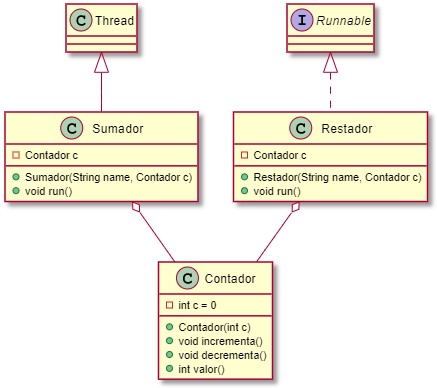

Unidad 3. Programación multihilo: Sincronización y comunicación de hilos
Índice
Vocabulario
- Condición de carrera: Situación en que el correcto funcionamiento de un programa depende del orden en que se intercale la ejecución de las instrucciones de sus diferente hilos. Esto ocurre cuando uno o más hilos acceden a información compartida de forma concurrente e intentan modificarla a la vez.
- Deadlock: Situación en que dos o más hilos están bloqueados mutuamente, todos ellos esperando para conseguir el bloqueo sobre objetos bloqueados por otros hilos, de manera que ninguno de ellos podrá continuar nunca.
- Sección crítica: Fragmento de un programa que no puede ejecutar de manera simultánea (concurrentemente) más de un hilo del programa, es decir, que distintos hilos deben ejecutar en exclusión mutua
- Thread-safe: Se dice de una clase cuyos métodos implementan los mecanismos de sincronización necesarios para el uso concurrente de sus objetos por parte de distintos hilos, de manera que no es necesario ningún mecanismo de sincronización externo a la propia clase.
Memoria compartida
A menudo los hilos necesitan comunicarse unos con otros. La forma que tienen de hacerlo consiste en compartir un objeto.
Vamos a desarrollar un ejemplo en el que dos hilos comparten un objeto de la clase Contador.

Para probar el objeto compartido, en una cuarta clase que contiene el main se crea un objeto Contador que se inicializa a 100 y se crean y lanzan dos threads, uno de tipo Sumador y otro de tipo Restador. En la clase Sumador se usa el método del objeto Contador que incrementa en uno su valor mientras que en la clase Restador se usa el método que decrementa en uno su valor. Cada una va a realizar la acción 300 veces, esperando entre cada acción un tiempo aleatorio entre 50ms y 150ms.
Es muy importante asegurarse que pasamos el mismo objeto Contador como parámetro al constructor de Sumador y de Restador, para que ambos trabajen con la misma instancia.
Comportamiento esperado
Crea las cuatro clases en función del diagrama de clases proporcionado. Asegúrate que Sumador hereda de Thread y Restador implementa la interfaz Runnable para comprobar las diferencias de uso y creación de threads a partir de cada tipo de clase.
¿Qué debería ocurrir tras ejecutar el código?
Comprueba lo que pasa realmente. Intenta ejecutar el programa varias veces para ver si puedes obtener resultados diferentes.
Código del ejemplo
public class U3S3_SharedMemory {
public static void main(String[] args) throws InterruptedException {
// Inicializar el objeto Contador
Contador c = new Contador(100);
// Crear y lanzar 2 hilos (Sumador + Restador)
Sumador s1 = new Sumador("Sumador1", c);
Restador r1 = new Restador("Restador1", c);
Thread h1 = new Thread(r1);
s1.start();
h1.start();
// El hilo principal espera a que los hilos s1 y r1 terminen
s1.join();
h1.join();
System.out.println("El valor final de c es " + c.valor());
}
public class Contador {
private int c = 0;
public Contador(int c) {
this.c = c;
}
public void incrementa() {
c++;
}
public void decrementa() {
c--;
}
public int valor() {
return c;
}
}
public class Sumador extends Thread {
private Contador c;
public Sumador(String name, Contador c) {
// To set the thread name we can access the Thread class constructor
super(name);
this.c = c;
}
@Override
public void run() {
// Ejecutar 300 veces con espera entre 50ms y 150ms
for (int i = 0; i < 300; i++) {
try {
c.incrementa();
System.out.println(Thread.currentThread().getName() + " " + c.valor());
Thread.sleep((long) (Math.random() * 100 + 50));
} catch (InterruptedException ex) {
// Nothing
}
}
}
}
public class Restador implements Runnable {
private Contador c;
private String name;
public Restador(String name, Contador c) {
// Restador doesn't extend Thread, so it cannot call the Thread constructor
// super(name);
this.name = name;
this.c = c;
}
@Override
public void run() {
Thread.currentThread().setName(this.name);
// Ejecutar 300 veces con espera entre 50ms y 150ms
for (int i = 0; i < 300; i++) {
try {
c.decrementa();
System.out.println(Thread.currentThread().getName() + " " + c.valor());
Thread.sleep((long) (Math.random() * 100 + 50));
} catch (InterruptedException ex) {
// Nothing
}
}
}
}
Si ejecutamos el programa, la mayoría de veces obtendremos el resultado esperado, 100. Sin embargo, hay ocasiones en que podemos encontrar otros valores tales como 99, 101 o cualquier otro.
Para evitar problemas de sincronización (son problemas como hemos visto aleatorios y muy difíciles de detectar), necesitamos que los hilos estén sincronizados entre sí.
Si analizamos el problema anterior, veremos que se está intentando ejecutar el siguiente código en paralelo desde diferentes hilos, en la misma instancia (memoria compartida):
public void incrementa() {
c++;
}
public void decrementa() {
c--;
}
Si aplicásemos las condiciones de Bernstein a esos dos métodos, veríamos que no se cumple ninguna de las tres, por lo que ese código no puede ser ejecutado concurrentemente, al menos no sin tener problemas de concurrencia.
Así, para evitar que varios hilos ejecuten esos métodos de forma concurrente, necesitamos estructuras de programación que nos ayuden a conseguirlo.
Sincronización
El código anterior no funciona porque las operaciones que se realizan en los métodos incrementa y decrementa no son atómicas, sino que se descomponen en operaciones más simples que se ejecutan una tras otra.
Cuando estas operaciones se ejecutan en un hilo, la ejecución del hilo se puede interrumpir y se pueden intercalar entre ellas operaciones de otros hilos. Según cómo se intercalen las operaciones y los datos a los que accedan, se pueden obtener resultados no esperados. Esto es lo que se conoce como una condición de carrera.
Como vimos en la primera parte del tema, la comunicación entre threads se produce principalmente mediante el acceso compartido a objetos y sus propiedades. Este mecanismo de comunicación es muy eficiente pero presenta dos tipos de errores:
- Interferencia entre threads
- Errores de consistencia de la información en memoria.
La herramienta de programación que utilizamos para prevenir este tipo de errores es la sincronización.
La mayor parte del tiempo, los threads no tienen en cuenta al resto de hilos que se ejecutan en el programa ni les importa lo que éstos hagan. Pero si necesitan algo de otro thead, entonces necesitan la sincronización.
Monitores y bloqueos
La sincronización en Java se realiza usando monitores. Es una propiedad que proporciona la clase Object, por lo tanto todas nuestras clases Java, directa o indirectamente, heredan esta propiedad de Object. Este mecanismo permite a un único thread a la vez ejecutar la sección de código protegida por el monitor.
Un monitor no es más que un bloqueo sobre un objeto. Cada objeto tiene un y sólo un bloqueo (candado) interno asociado. El bloqueo de un objeto solamente puede ser adquirido por un thread en cada momento.
La sincronización implica muchos conceptos. El más utilizado es la exclusión mutua (sólo un hilo puede disponer de un monitor a la vez). Por lo tanto, la sincronización utilizando monitores significa que cuando un hilo accede a una sección protegida por un monitor, ningún otro hilo puede acceder a esa o a cualquier otra sección protegida por ese mismo monitor, hasta que el hilo salga de la sección protegida
Pero la sincronización también asegura que las escrituras en memoria realizadas por un thread dentro de un bloque protegido por un monitor son accesibles al resto de threads que accedan a los bloques protegidos por ese mismo monitor.
Un objeto, un monitor
He recalcado en varias ocasiones que los bloques de código a los que se accede en exclusión mutua son aquellos que están protegidos por el mismo monitor. Esto es lo mismo que decir a aquellos que se realizan sobre el mismo objeto.
Cada objeto tiene asociado un monitor y la exclusión mutua y la sincronización de memoria tiene sentido si varios threads usan el mismo monitor para su sincronización.
Cada objeto gestiona una cola de hilos que quieren conseguir el bloqueo (monitor) del mismo. Como suele ser habitual, la elección del proceso de la cola que conseguirá el bloqueo es totalmente indeterminista, depende de múltiples factores y no sigue ningún orden preestablecido.
Secciones críticas
En Java la palabra reservada synchronized sirve para hacer que un bloque de código o un método sea protegido por el cerrojo del objeto. Para ejecutar un bloque o un método sincronizado, los hilos deben conseguir previamente el bloqueo (candado) del objeto, debiendo esperar a que quede libre (el hilo que lo tiene lo libere) si el monitor ya ha sido adquirido por otro hilo.
Esto ocurre sólo si se está intentando acceder al monitor del mismo objeto que otro hilo ya tenga en propiedad.
La palabra reservada synchronized puede aplicarse en distintos tipos de bloques de código y, en cada caso, se utilizará un objeto de bloqueo distinto.
- Métodos no estáticos
- Métodos estáticos
- Bloques de código dentro de un método
Para métodos no estáticos se añade la palabra reservada synchronized a la definición del método.
public class Counter {
private int count = 0;
public synchronized void add(int value){
this.count += value;
}
}
El bloqueo se aplica sobre la instancia del objeto sobre la que se ejecuta el método, es decir, this. En este caso dos hilos no podrían ejecutar a la vez dos métodos del mismo objeto marcados como synchronized.
Cada objeto que instanciemos de la clase tendrá su propio monitor asociado que no interferirá con los bloqueos que se hayan hecho sobre otros objetos de la misma clase.
Como ya hemos dicho, este comportamiento sólo es válido si todos los métodos sincronizados a los que se quiere acceder pertenecen a la misma instancia. De este modo el monitor es el mismo y se aplica la exclusión mutua en la ejecución de los bloques de código protegidos por el monitor.
public class Counter {
private int count = 0;
public synchronized void add(int value){
this.count += value;
}
public synchronized void sub(int value){
this.count -= value;
}
}
Sincronización con métodos estáticos
En este caso el bloqueo se realiza sobre la clase a la que pertenece el método. Como sólo hay una instancia de cada objeto clase en la JVM, sólo un hilo a la vez podrá adquirir el monitor y ejecutar el código protegido de una clase estática.
No es muy recomendable hacerlo de esta forma.
La sincronización no tiene porqué realizarse sobre todo un método, aunque es lo más recomendable. A veces es preferible sincronizar sólo una parte de un método. Otras no es posible sincronizar el método completo. Para sincronizar un bloque de código usamos la palabra reservada synchronized seguida, entre paréntesis, del objeto del que usaremos el monitor. El código protegido se ubicará entre un par de llaves.
public void add(int value){
synchronized(this){
this.count += value;
}
}
En el ejemplo se ha utilizado this como objeto para el monitor. Decimos que el código está sincronizado con el monitor del objeto que pongamos entre paréntesis. Un método sincronizado usa el objeto al que pertenece como monitor, es decir, también usa this.
Sólo puede haber un thread ejecutando un bloque sincronizado para el mismo monitor. Los demás se quedan esperando.
El siguiente código define dos bloques protegidos por la instancia a la que pertenecen. En términos de sincronización, ambos bloque son totalmente equivalentes.:
public class MyClass {
public synchronized void log1(String msg1, String msg2){
log.writeln(msg1);
log.writeln(msg2);
}
public void log2(String msg1, String msg2){
synchronized(this){
log.writeln(msg1);
log.writeln(msg2);
}
}
}
Por lo tanto, sólo un thread podría ejecutar uno de los dos bloques anteriores al mismo tiempo. Si otro hilo intentase ejecutar el mismo bloque, o el otro, se quedaría bloqueado en la cola de espera del monitor hasta que el monitor quede libre.
¿Qué objetos se pueden usar como monitores
Oracle dice que se puede usar cualquier objeto como monitor de sincronización, sin embargo recomiendan que no se sincronice sobre String, o cualquier objeto envoltorio (wrapper) de los tipos de datos primitivos (Integer, Double, Boolean, ...).
Para estar seguros, lo mejor es sincronizar sobre this, sobre una instancia de un objeto, en su defecto sobre un nuevo objeto de tipo object, aunque sea un objeto vacío sin propiedades ni funcionalidad.
Sincronización y actualización de la información
Sin el uso de la palabra reservada synchronized (o el modificador volatile ) no tenemos ninguna garantía de que cuando un hilo cambie el valor de una variable compartida con otros threads (por ejemplo a través de un objeto compartido entre todos los threads), los otros hilos puedan ver el valor modificado. No hay ninguna garantía de que cuando una variable se guarda en un registro de la CPU, el valor de ésta se vuelque a la memoria principal.
Esto, en programación secuencial no supone ningún problema ya que el único hilo existente no necesita de estas actualizaciones "instantáneas". Si fuese necesario se usaría la palabra volatile para las variables a las que se quiera forzar ese comportamiento.
En la programación multihilo, y dentro de la sincronización, un bloque protegido por un monitor nos garantiza que:
- Cuando un hilo entra en un bloque
synchronizedse actualizará el valor de todas las variables visibles para el hilo. - Cuando un hilo salga de un bloque
synchronizedtodos los cambios realizados por el hilo se actualizarán en la memoria principal.
El comportamiento descrito es similar al que provoca el uso de la palabra reservada volatile, evitando el uso de caches y la desincronización de la información entre la CPU y la memoria principal.
El siguiente ejemplo muestra un monitor que implementa un contador:
class Contador {
// monitor contador
private int actual;
public Contador(int inicial)
{
actual = inicial;
}
public synchronized void inc() { actual++; }
public synchronized void dec() { actual--; }
public synchronized int valor() { return actual;}
}
class Usuario extends Thread {
// clase hilo usuario
private Contador cnt;
public Usuario(String nombre, Contador cnt) {
super(nombre); this.cnt = cnt;
}
public void run() {
for (int i = 0; i < 1000; i++) {
cnt.inc();
System.out.println("Hola, soy " + this.getName() + ", mi contador vale " + cnt.valor());
}
}
}
class EjemploContador {
// principal
final static int nHebras = 20;
public static void main(String[] args) {
// método principal
final Contador cont1 = new Contador(10);
Usuario hebra[] = new Usuario[nHebras];
for (int i = 0; i < nHebras; i++) {
//crea hebras
hebra[i] = new Usuario("la hebra-" + i, cont1);
// lanza hebras
hebra[i].start(); }
}
}
}
Es importante hacer notar, aunque suene a pesado, que todos los hilos acceden al código protegido del objeto cont1 que se crea en el método main. Así, no puede haber dos hilos ejecutando a la vez ninguna de los tres métodos de la instancia cont1 de la clase Contador.
Usar "final" con objetos de tipo monitor
Un objeto usado como monitor, o como memoria compartida entre hilos, debería ser de tipo final, porque si se le asigna un nuevo valor quedan si efecto todos los bloqueos que existan sobre dicho objeto. Un objeto de tipo final una vez que se ha creado y se le ha asignado un valor no se le puede asignar un nuevo valor.
Sincronización entre hilos
Ya hemos visto un tipo de problema en el que varios hilos comparten recursos y se sincroniza el acceso a estos recursos mediante el uso de monitores. Hasta ahora, una vez que un hilo obtiene el bloqueo de un monitor, puede hacer uso del mismo de forma indiscriminada, sin tener en cuenta ninguna otra condición.
Ahora vamos a ver cómo, en función del estado de los recursos, cada uno de los hilos podrá realizar determinadas acciones o no, permitiendo que los hilos se queden a la espera de un cambio de estado que podrá ser notificado por otros hilos.
Para ello, además de un mecanismo de bloque sobre los recursos compartidos, será necesario un mecanismo de espera para que, en el caso de que el estado de los recursos compartidos no permita a un hilo realizar una acción, la ejecución del hilo quede en suspenso a la espera de que esa condición se cumpla.
Esperas activas vs. esperas no activas
El mecanismo es de espera no activa, es decir, no se debe consumir tiempo del procesador ni recursos del sistema para comprobar si es posible continuar con la ejecución, mientras no se reciba una notificación de que el estado ha cambiado y podría permitir que el hilo continúe su ejecución.
Esto también nos permitirá, colateralmente, controlar el orden de ejecución de los hilos en función de la relación que se establezca entre ellos.
Para resolver este tipo de situaciones volvemos a utilizar métodos de la clase Object, accesibles para cualquier objeto.
- wait(): interrumpe la ejecución del hilo actual. La ejecución del hilo queda bloqueada mientras otro hilo no ejecute el método notify (o notifyAll) sobre el objeto. Este método, por tanto, proporciona un mecanismo de espera no activa.
- notify(): desbloquea uno de los hilos que están esperando sobre un objeto tras haber ejecutado el método wait()., de manera que pueda continuar su ejecución. Este método proporciona un mecanismo de notificación para terminar con la espera no activa de los hilos que están a la espera de un objeto de bloqueo. El orden en que se desbloquean los hilos en un objeto de bloqueo vuelve a ser indeterminista y no tiene porqué coincidir con el orden en que se bloquearon.
- notifyAll(): desbloquea todos los hilos que están esperando sobre un objeto de bloqueo tras haber ejecutado el método wait(), de manera que puedan continuar su ejecución.
wait, notify and notifyAll se utilizan para permitir a los hilos comunicarse entre ellos mediante un mecanismo de signal&continue.
Contexto de ejecución de los métodos de sincronización
El hilo que llama a wait(), notify() o notifyAll() debe tener el bloqueo del monitor del objeto sobre el que se llama. Si no lo tiene, se lanzará una excepción de tipo java.lang.IllegalMonitorStateException.
Por lo tanto, estos métodos deben ser llamados desde un bloque sincronizado.
Cuando se llama al método wait(), el hilo estará dentro de un bloque sincronizado, por lo tanto tendrá el bloqueo del monitor. En ese momento el hilo libera el bloqueo de ese monitor y se queda en una cola (perteneciente al objeto) de hilos en espera de ser notificados, diferente a la de los hilos que están esperando por el bloqueo.
Cuando se desbloquea un hilo porque otro ha llamado a notify()/notifyAll(), el hilo vuelve al punto donde hizo el wait(), por lo tanto sigue dentro de un bloque sincronizado. Para poder continuar con la ejecución tendrá que pasar a la cola de hilos esperando por el bloqueo y esperar a ser seleccionado para seguir ejecutándose.

Veamos un ejemplo del uso de wait() y notify() en un bloque sincronizado:
synchronized(objBloqueo)
{
while(!condiciónParaPoderSeguir) {
try {
// Espera que la condición cambie y otro hilo avise
objBloqueo.wait()
} catch (InterruptedException e) {}
}
// Si el hilo ha llegado hasta aquí, significa que o bien al principio
// o bien tras haber realizado una o más esperas y haber sido notificado
// de cambios por parte de otros hilos, la condición se ha cumplido
// Además ha conseguido el bloqueo del monitor para poder continuar
// dentro del bloque synchronized
realizar_operación;
// Esta parte es opcional. La puede realizar este mismo hilo, en este
// mismo método, o bien la puede realizar otro hilo en otro método
if(condiciónParaQueOtrosSigan) {
objetoBloqueo.notify(); // o objetoBloqueo.notifyAll()
}
}
En el ejemplo anterior, las condiciones suelen estar basadas en propiedades del propio objBloqueo, ya que de esta forma se mantiene un estado compartido por todos los hilos.
Veamos ahora otro ejemplo
// It is the common java class on which thread will act and call wait and notify method.
public class Book {
String title;
boolean isCompleted;
public Book(String title) {
super();
this.title = title;
}
public String getTitle() {
return title;
}
public void setTitle(String title) {
this.title = title;
}
public boolean isCompleted() {
return isCompleted;
}
public void setCompleted(boolean isCompleted) {
this.isCompleted = isCompleted;
}
}
// It will first take a lock on book object
// Then, the thread will wait until other thread call notify method, then after it will complete its processing.
// So in this example, it will wait for BookWriter to complete the book.
public class BookReader implements Runnable{
Book book;
public BookReader(Book book) {
super();
this.book = book;
}
@Override
public void run() {
synchronized (book) {
System.out.println(Thread.currentThread().getName()+" is waiting for the book to be completed: "+book.getTitle());
try {
book.wait();
} catch (InterruptedException e) {
e.printStackTrace();
}
System.out.println(Thread.currentThread().getName()+": Book has been completed now!! you can read it");
}
}
}
// This class will notify thread(in case of notify) which is waiting on book object.
// It will not give away lock as soon as notify is called, it first complete its synchronized block.
// So in this example, BookWriter will complete the book and notify it to BookReaders.
public class BookWriter implements Runnable{
Book book;
public BookWriter(Book book) {
super();
this.book = book;
}
@Override
public void run() {
synchronized (book) {
System.out.println("Author is Starting book : " +book.getTitle() );
try {
Thread.sleep(1000);
} catch (InterruptedException e) {
e.printStackTrace();
}
book.setCompleted(true);
System.out.println("Book has been completed now");
book.notify();
System.out.println("notify one reader");
}
}
}
// This is our main class which will create object of above classes and run it.
public class U3S5_Books {
public static void main(String args[])
{
// Book object on which wait and notify method will be called
Book book=new Book("The Alchemist");
BookReader johnReader=new BookReader(book);
BookReader arpitReader=new BookReader(book);
// BookReader threads which will wait for completion of book
Thread johnThread=new Thread(johnReader,"John");
Thread arpitThread=new Thread(arpitReader,"Arpit");
arpitThread.start();
johnThread.start();
// To ensure both readers started waiting for the book
try {
Thread.sleep(3000);
} catch (InterruptedException e) {
e.printStackTrace();
}
// BookWriter thread which will notify once book get completed
BookWriter bookWriter=new BookWriter(book);
Thread bookWriterThread=new Thread(bookWriter);
bookWriterThread.start();
}
}
Comentarios y preguntas sobre el código anterior
Si ejecutamos el código anterior, tenemos que hacernos varias preguntas:
¿Cuántos wait() se hacen? ¿Y cuántos notify()?
Solución: Se están haciendo 2 wait(), 1 por cada hilo BookReader y sólo un notify(), así que algo no cuadra.
Uno de los lectores se queda sin notificar, por lo tanto un hilo se queda esperando en un wait(). Como ese hilo no termina, el proceso tampoco. Hay que recordar que un proceso no termina hasta que lo hace el último de sus hilos. Esto en Netbeans implica que el programa no acaba y lo tenemos que parar.
Solución al problema: En este caso tenemos dos alternativas. La primera pasa por usar notifyAll() en vez de notify(). De esta forma los dos BookReader se activan y se quedan a la espera de poder tomar el bloqueo del monitor. Uno lo hará primero y el otro después, pero los dos acabarán leyendo el libro.
La otra opción es, siguiendo con notify(), que cada lector cuando acabe de leer el libro notifique a otros posibles lectores que haya en espera para que uno se despierte y lea el libro.
En el main hemos hecho que primero empiecen los BookReaders y una vez que están esperando el BookWriter escriba el libro y avise. ¿Qué pasa si lo hacemos al revés o si los lanzamos todos juntos y no sabemos en qué orden se van a ejecutar?
Si lanzamos primero el BookWriter, este acaba el libro y notifica a... nadie, porque los BookReaders todavía no estarán esperando. Después llegarán los BookReaders y se quedarán los dos colgados, ya que ningún otro hilo les notificará.
Solución: Los hilos ahora mismo se están bloqueando de manera indiscriminada, pero realmente deben bloquearse sólo si el libro que quieren leer no está acabado. Por lo tanto tenemos que controlar con una condición el bloqueo de los BookReader. Tal y como hemos comentado las condiciones las debe tener el objeto compartido, en este caso book, que lo comparten el BookWriter y los dos BookReader. La condición que nos sirve para discriminar si un BookReader puede continuar o no es la propiedad isCompleted que consultamos a través del método book.isCompleted(),
try {
if (!book.isCompleted())
book.wait();
} catch (InterruptedException e) {
Con esos dos cambios la aplicación debería funcionar con cualquier número de BookReaders y de BookWriters, sin importar el orden ni la cantidad.
¿notify() o notifyAll()?
Todo dependerá del sistema que estemos programando, pero por norma general, si queremos que tras modificar el estado del sistema sólo continúe un hilo, llamaremos a notify().
Sino, debería utilizarse notifyAll(). Si todo está bien programado el hilo comprobará si puede seguir y, en caso contrario, volverá a hacer un wait() y seguir esperando, por eso no supone un problema que que más de un hilo se active.
El uso de notify() supone un mayor riesgo de que se produzcan bloqueos indefinidos de hilos a la espera de notificaciones que nunca van a llegar, siendo este bloqueo diferente de un interbloqueo o deadlock. Debemos ser muy cuidadosos con la programación de los mecanismos de sincronización.
Hay que tener en cuenta también que debería haber al menos una llamada notify() por cada wait() que se haya realizado, aunque eso tampoco asegura que algún hilo no se quede bloqueado.
Modifica el ejemplo Sumador-Restador
Haz las modificaciones necesarias en las clases del proyecto U3S3_SharedMemory (guárdalo como U3S3_SharedMemory_v2) para que:
- El primer hilo que haga una operación sobre el contador sea un Sumador
- Después de un Sumador siempre se ejecute un Restador y después de un Restador siempre se ejecute un Sumador, haciendo una secuencia Sumador-Restador-Sumador-Restador-...
U3S3_SharedMemory_v2
public class Contador {
private int c = 0;
boolean ahoraSumador = true;
public Contador(int c) {
this.c = c;
ahoraSumador = true;
}
public synchronized void incrementa() {
while (!ahoraSumador) {
try {
wait();
} catch (InterruptedException ex) {
}
}
// El hilo hace su tarea
c++;
System.out.println(Thread.currentThread().getName() + " " + valor());
// Cambia el estado y avisa al resto de hilos por si alguno puede seguir
ahoraSumador = false;
notifyAll();
}
public synchronized void decrementa() {
while (ahoraSumador) {
try {
wait();
} catch (InterruptedException ex) { }
}
// El hilo hace su tarea
c--;
System.out.println(Thread.currentThread().getName() + " " + valor());
// Cambia el estado y avisa al resto de hilos por si alguno puede seguir
ahoraSumador = true;
notifyAll();
}
public int valor() {
return c;
}
}
En la clase Contador hemos incorporado un estado, que controla qué hilo es el que puede ejecutar y cuál el que tiene que esperar.
Además, como se comenta más adelante, se ha movido la salida de los hilos a los métodos de esta clase.
public class Restador implements Runnable {
private Contador c;
private String name;
public Restador(String name, Contador c) {
// super(name);
this.name = name;
this.c = c;
}
@Override
public void run() {
Thread.currentThread().setName(this.name);
// Ejecutar 300 veces con espera entre 50ms y 150ms
for (int i = 0; i < 300; i++) {
try {
c.decrementa();
Thread.sleep((long) (Math.random() * 100 + 50));
} catch (InterruptedException ex) {
// Nothing
}
}
}
}
Tanto Restador como Sumador siguen siendo prácticamente idénticos.
public class Sumador extends Thread {
private Contador c;
public Sumador(String name, Contador c) {
super(name);
this.c = c;
}
@Override
public void run() {
// Ejecutar 300 veces con espera entre 50ms y 150ms
for (int i = 0; i < 300; i++) {
try {
c.incrementa();
Thread.sleep((long) (Math.random() * 100 + 50));
} catch (InterruptedException ex) {
// Nothing
}
}
}
}
La clase principal se mantiene igual.
Salida sincronizada
Como se puede observar, la salida que en el ejemplo original se realizaba en el método run de Sumador y Restador, ahora se ha movido a la clase Contador, en concreto a los métodos synchronized.
Hay que tener cuidado con la salida por pantalla. Todos los threads están usando System.out a la vez y los resultados que se muestran por pantalla. Aunque suene extraño, el orden en el que se muestran los mensajes no siempre es el mismo orden en el que se han producido. Por eso es importante que las salidas de los hilos se muevan dentro de los bloques sincronizados.
Si no controlamos la forma de mostrar la salida podemos encontrarnos con problemas que están bien resueltos pero que la salida nos dice lo contrario.